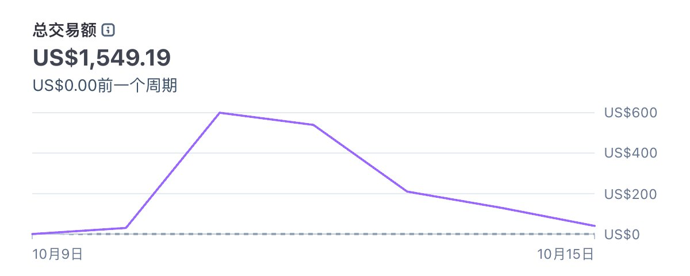

一个人做海外网站，从选方向到收美金，我把收藏的好内容按顺序串起来了 ， 需要的先收藏哦~
1/ 选方向：除了 AI 工具站，还有 4 种站能做 https://x.com/keke202106/status/2109455199131853073
2/ 新手案例：第一个 AI 付费工具站，5 天赚了 1500 美元 https://x.com/0xEcho99/status/2110669876482203775
3/ 全链路：用 AI 跑通从获客、成交到自动交付 https://x.com/AndyL5cc/status/2109472295299535250
4/ 建站：开源的 landing page 设计规则，Claude Code 和 Cursor 都能用 https://x.com/CY160909/status/2114213361621540994
5/ 选题：24 小时自动跑的选题流水线，过滤掉没有商业意图的词 https://x.com/aronhouyu/status/2109278797879205910
6/ SEO：10 个海外外链交易平台 https://x.com/houzhongji89090/status/2109607529290567823
7/ GEO：一篇博客拿到 5 万曝光，让 ChatGPT 主动推荐你 https://x.com/ceoplanet519/status/2108761070714355866
8/ 冷启动：第一批 100 个用户靠人工找，不靠投放 https://x.com/HarriesSteele/status/2110926473658016225
9/ Reddit：搞钱指南，用信息差在英文社区赚美金 https://x.com/better_christal/status/2056218181149282775
10/ X 增长：账号小的时候多回复，长帖比短帖好，写上具体金额 https://x.com/tibo_maker/status/2109214987038216210
11/ 收款：独立开发者的 11 种收款方式怎么选 https://x.com/bozhou_ai/status/2108470868678762867
12/ 基建：网络、海外手机号、港卡美卡，按这个顺序搭 https://x.com/hejushang8/status/2110196863421014363
引用 @0xEcho99 弗里：《AI 网站出海新手 5 天 1500 刀实战复盘，我实现了通过 AI 出海赚美金》
原文：https://x.com/0xEcho99/status/2110669876482203775
开始上站到目前 5 天时间，我的第 1 个 AI 付费工具站实现了收入突破 1500 刀…
